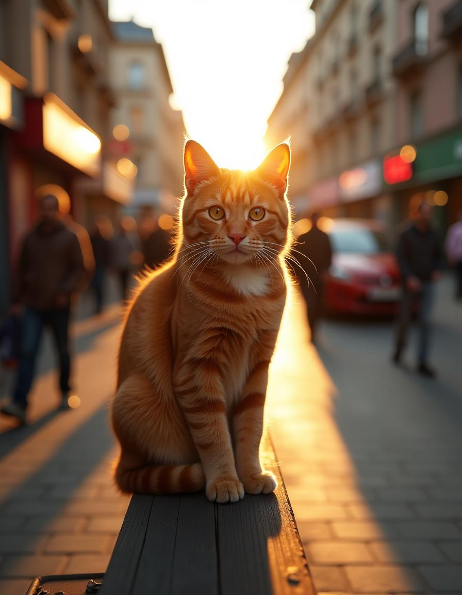
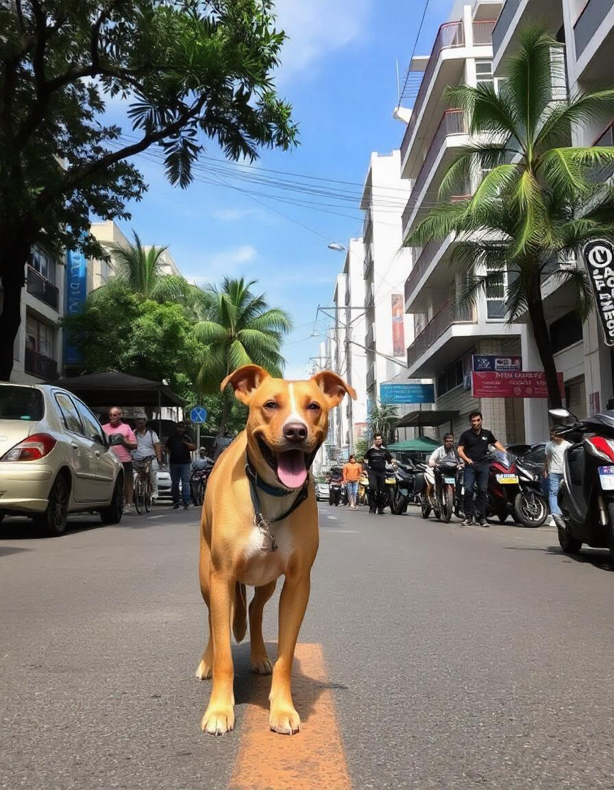
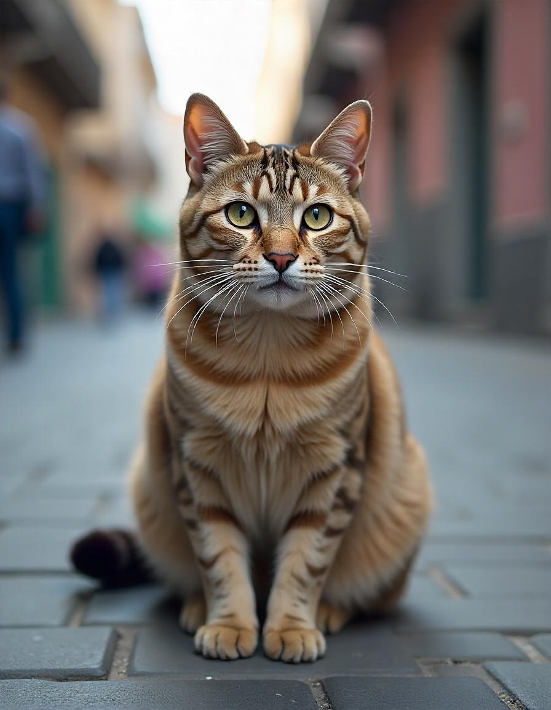
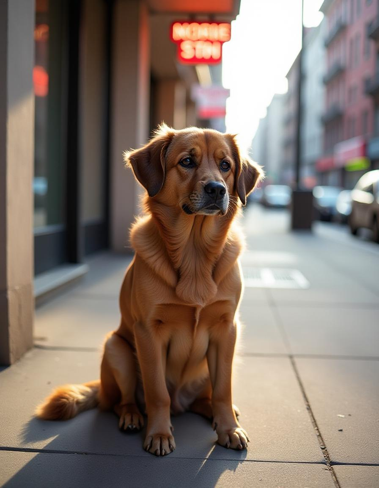

Adotar um animal é um processo simples e gratificante. Aqui está um guia passo a passo para ajudá-lo a entender como você pode dar um lar a um dos nossos amigos.
Navegue pelas fotos e descrições dos animais disponíveis para adoção abaixo.
Encontre um animal que se encaixe no seu estilo de vida e necessidades.
Complete o formulário de adoção online para iniciar o processo.
Agende uma entrevista e uma visita ao animal para garantir a compatibilidade.
Complete a adoção e leve seu novo amigo para casa!
Cada animal merece uma chance de ter um lar amoroso. Navegue abaixo para conhecer os nossos amigos peludos que estão à espera de um lar para sempre. Quem sabe, o seu novo companheiro está aqui esperando por você!

Raça: Vira-lata
Idade: 1 anos
Peso: 3 kg
Temperamento: Brincalhona e afetuosa
Descrição:Estrela é uma gata adorável que adora brincar e explorar. Com seu jeito curioso, ela traz alegria para qualquer ambiente. Estrela adora brinquedos e não resiste a um bom colo.
Saúde:Castrada, vacinada e saudável.
Características:
• Apreciações: Brincadeiras com cordas e longas sonecas,adora tomar sol.
• Nível de energia:: Alto – cheia de energia e disposição.
• Treinamento: Usa a caixa de areia e é bem tranquila.
Ideal para:Famílias ativas ou solteiros que buscam uma companheira divertida.

Raça: Vira-lata
Idade: 3 anos
Peso: 15 kg
Temperamento:Amigável e leal
Descrição:Bella é uma adorável cachorrinha de 3 anos que irradia amor e alegria. Com seu olhar carinhoso e espírito brincalhão, ela é perfeita para quem busca um companheiro fiel. Bella adora passear, brincar com bolinhas e receber carinho.
Saúde:Bella está castrada, vacinada e saudável, pronta para encontrar sua nova família.
Características:
• Apreciações: Passeios no parque, brincadeiras com outros cães e muito carinho.
• Nível de energia: Alto – precisa de exercícios diários e atenção.
• Treinamento: Já aprendeu comandos básicos como “sentar” e “dar a pata”.
Ideal para: Famílias ativas, solteiros ou casais que buscam uma companheira leal e cheia de energia.

Raça: Vira-lata
Idade: 2 anos e meio
Peso: 4 kg
Temperamento:Afetuoso e curioso
Descrição:Oliver é um gato encantador e brincalhão que adora explorar e tirar longas sonecas ao sol. É um companheiro ideal, se dá bem com todos e ama carinho.
Saúde:Castrado, vacinado e saudável.
Características:
• Apreciações: Brincar com brinquedos, se esconder em caixas.
• Nível de energia: Moderado.
• Treinamento: Usa a caixa de areia.
Ideal para: Famílias, solteiros ou casais que buscam um companheiro carinhoso, ideal para apartamentos.

Raça: Vira-lata
Idade: 8 anos
Peso: 20 kg
Temperamento:Calmo e carinhoso
Descrição:Zeus é um adorável cãozinho de 8 anos que traz uma serenidade especial a qualquer lar. Com seu olhar sábio e coração gentil, ele é o companheiro perfeito para quem busca um amigo leal e tranquilo. Zeus adora passeios curtos, receber carinho e passar tempo ao lado de seus humanos.
Saúde:Zeus está castrado, vacinado e em bom estado de saúde. Ele pode precisar de cuidados especiais, típicos da idade, mas ainda tem muita energia e amor para dar.
Características:
• Apreciações:Caminhadas tranquilas, momentos de aconchego e guloseimas.
• Nível de energia: Baixo a moderado – aprecia atividades leves e longas sonecas.
• Treinamento:Já aprendeu comandos básicos e é muito obediente.
Ideal para:Famílias tranquilas, pessoas idosas ou quem busca um companheiro sereno. Zeus se adapta bem a ambientes menores, como apartamentos, e ama a companhia de pessoas.